Venice Time Machine est un grand chantier de recherche mené par le DHlab de l’EPFL. Le projet ambitionne de transformer des siècles d’archives en données, puis de les mettre en réseau pour reconstituer le passé à l’aide d’algorithmes.
Confronté aux besoins de donner accès aux données déjà numérisées et de faire converger plusieurs projets de recherche en une interface unifiée, le DHlab m’a intégré pour explorer différents concepts d’interface.
Navigateur spatio-temporel inspiré des séquenceurs audiovisuels.
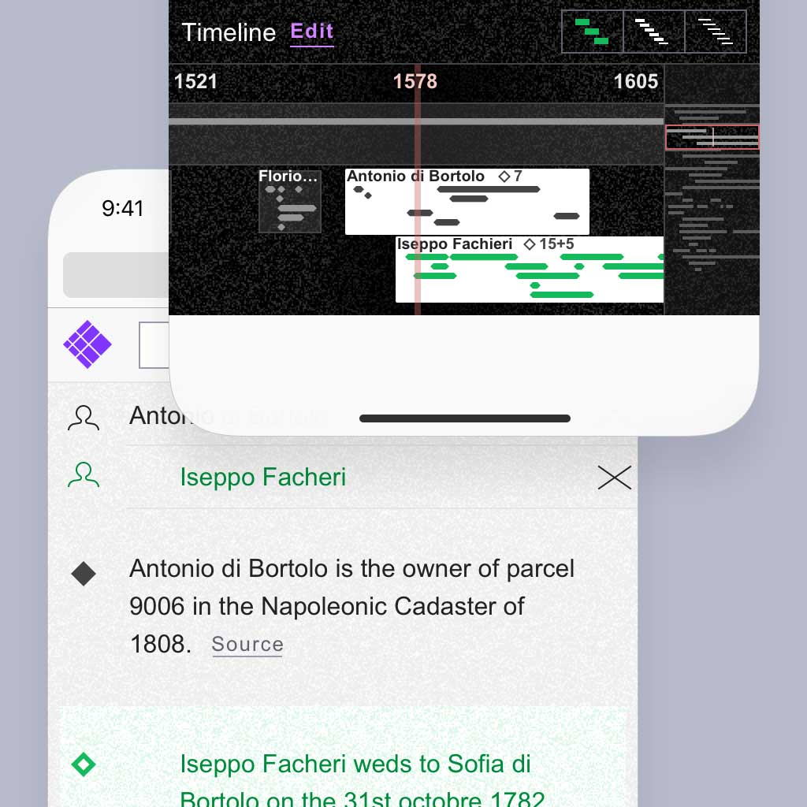
Chaque événement est figuré par un diamant. Dans le séquenceur (Timeline) la longueur du diamant correspont à une durée dans le temps.
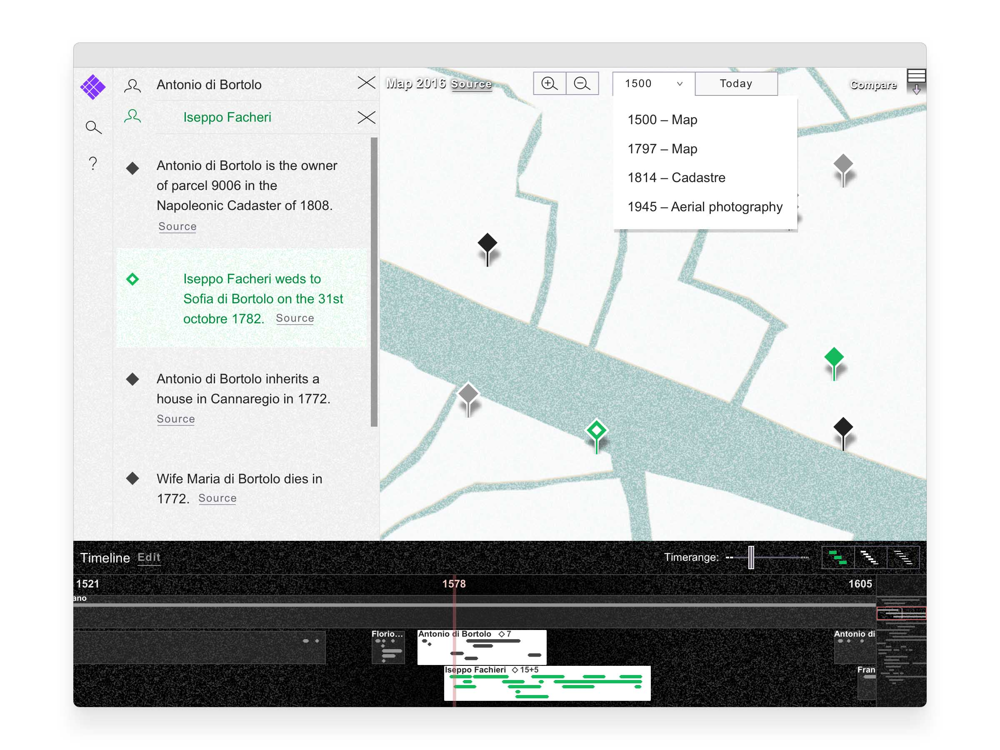
La vue de la carte permet de superposer différentes représentations géographiques (Cartes anciennes, vues aériennes ou satellitaires, photogramétrie).
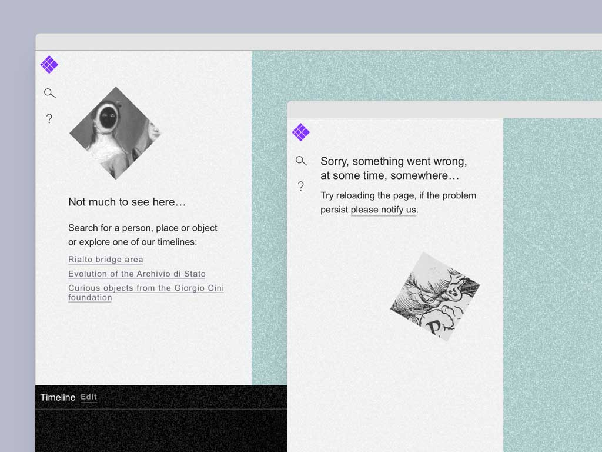
Messages en cas d'absence de contenu ou d'erreur.
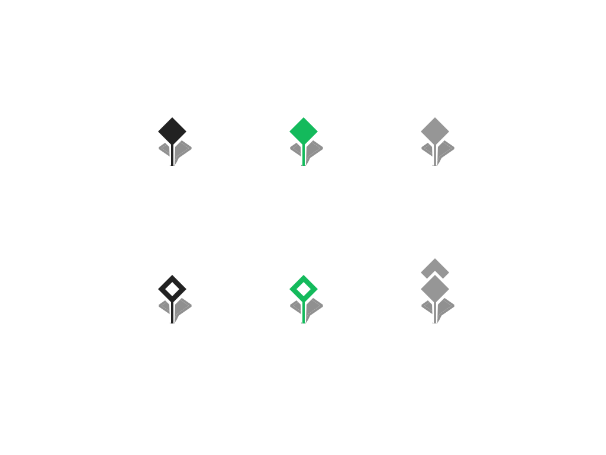
Marqueurs géographiques
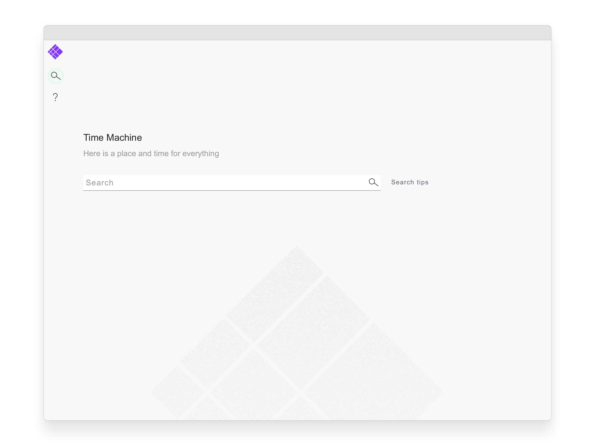
La page d'accueil contient uniquement un champ de recherche.
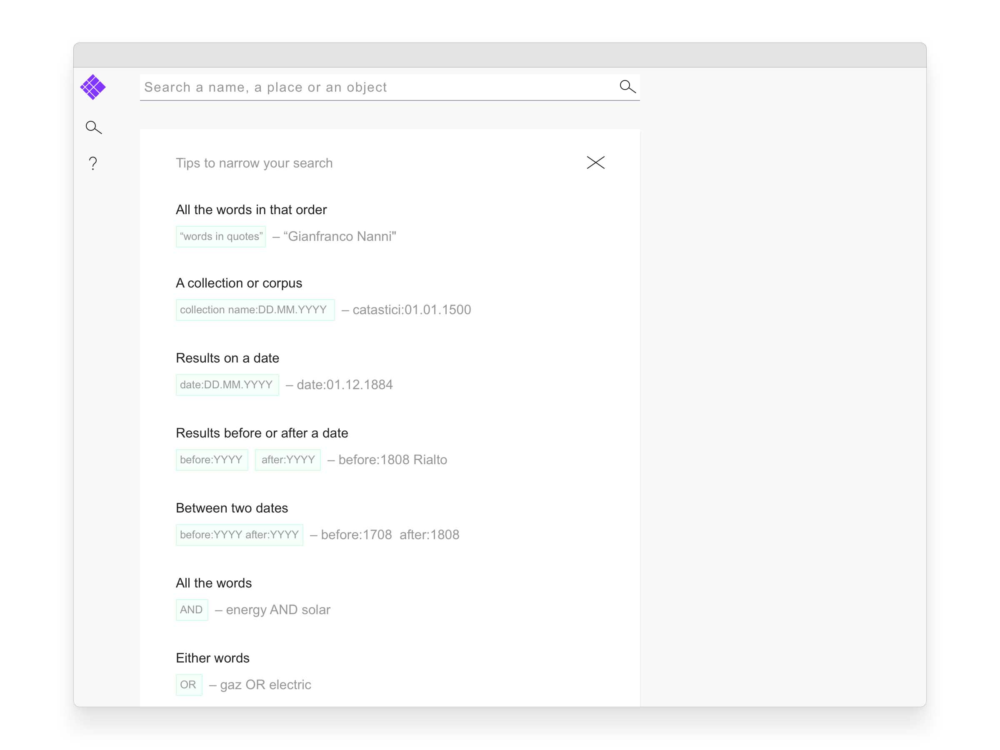
Les exemples de recherches complexes sont disponibles directement dans l'interface.
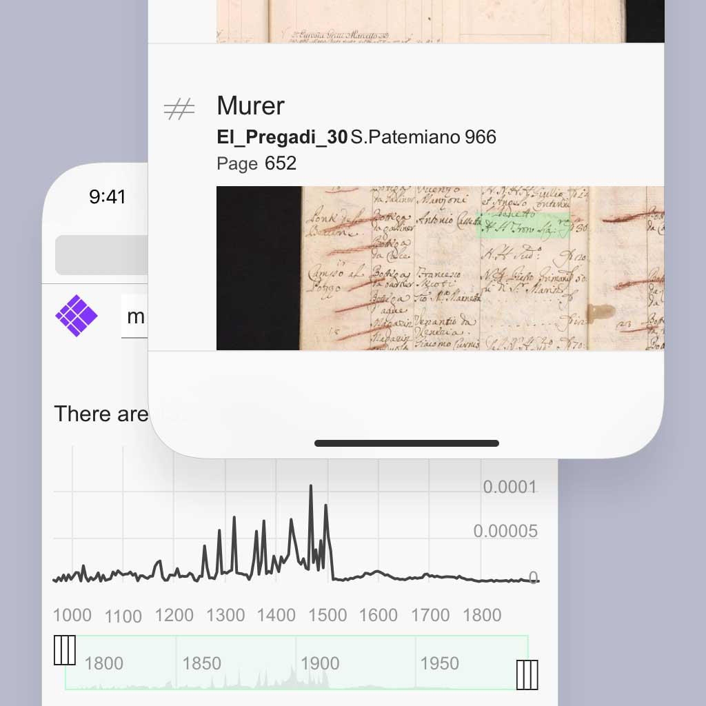
Détail de la page de résultats. Un histogramme figure la densités des résultats échelonnés dans le temps.
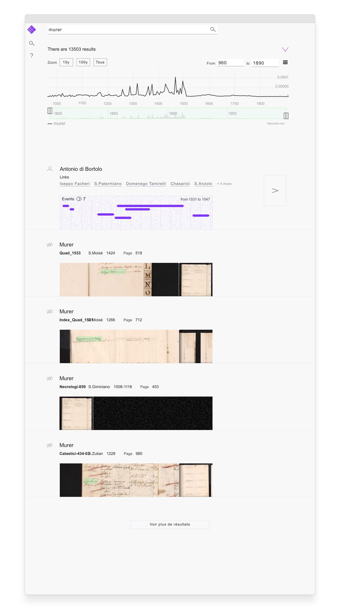
Page de résultats de recherche
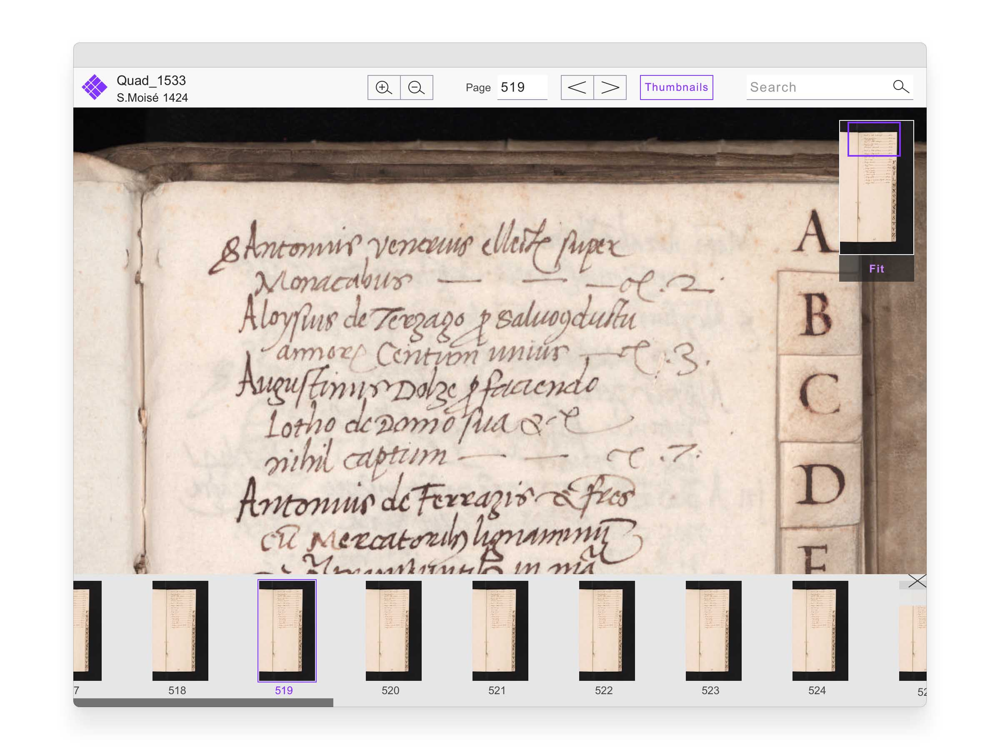
La lectrice de document permet de consulter les sources dans leur contexte.
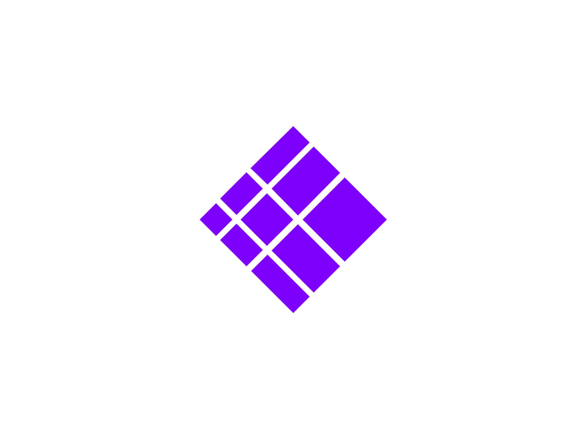
Le symbole se réfère simultanément aux diamants, représantants les événements, et au système de coordonnées géographiques interne de la Time Machine.
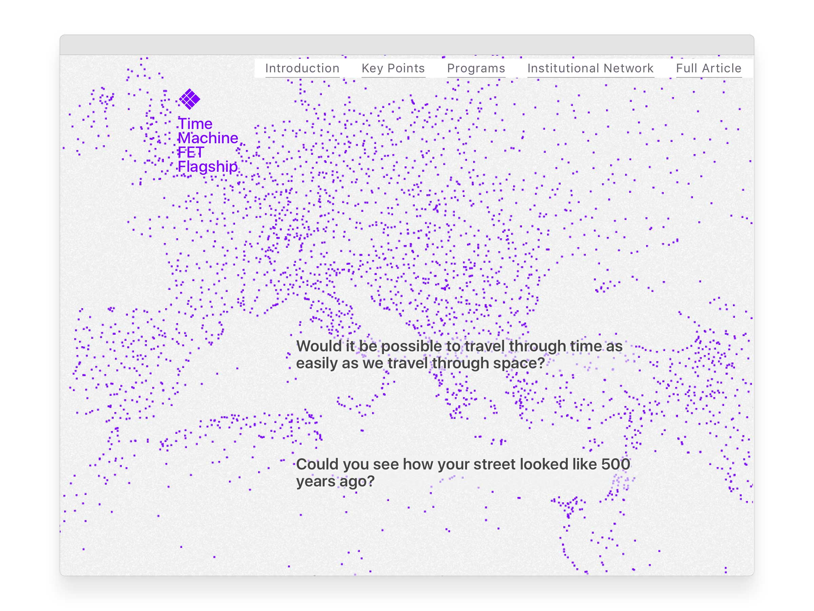
Site web promouvant l'extention du projet au niveau européen.